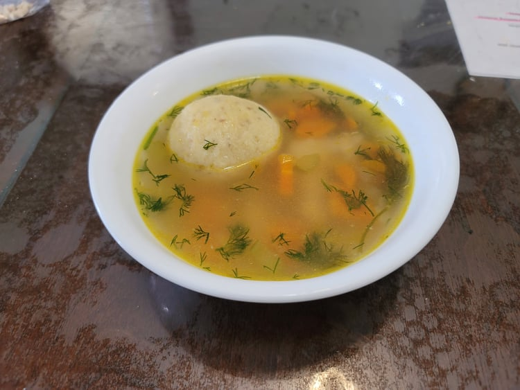

Matzo Ball Soup

Ingredients:
Soup:
- 1 tbsp Canola Oil
- 2 cloves Garlic, minced
- 1 Yellow onion, diced
- 3 stalks Celery, diced
- 3 Carrots, quartered and thinly sliced
- 1 Chicken breast, cut in half if very large
- 6 cups Chicken broth
- 2 cups Water
- 2 sprigs Dill
- Salt, to taste
- Black pepper, to taste
- 1 tbsp Dill, chopped
Matzo Balls:
- 3/4 cup Matzo meal
- 3 tbsp Schmaltz, or substitute canola oil
- 3 Eggs
- 1 tsp Salt
- 1/2 tsp Baking powder
- Black pepper, to taste
- 3 tbsp Water
Instructions:
- In a large bowl, combine the matzo ball ingredients and mix until homogenous. Place into a refrigerator and let chill.
- Heat the canola oil in a large pot over medium heat. Sauté the garlic, onion, celery, and carrots for 5 minutes or until the onions are transparent.
- Add in the chicken breast, chicken broth, water, sprigs of dill, and freshly cracked black pepper. Place a lid on the pot and bring to a boil. Once it reaches a boil, reduce the heat to low and let it simmer for 30 minutes, covered.
- After the soup has simmered for 30 minutes, remove the chicken breast and let it rest for 1-2 minutes. Then shred it with a fork and return it to the soup. Taste the soup and add salt if needed.
- Form the matzo meal mixture into ping pong ball sized balls and carefully drop them into the soup. Let the soup simmer for 20 more minutes, covered.
- Remove the cover and taste and adjust salt and pepper to preference. Remove from heat and add in the chopped dill. Serve immediately.